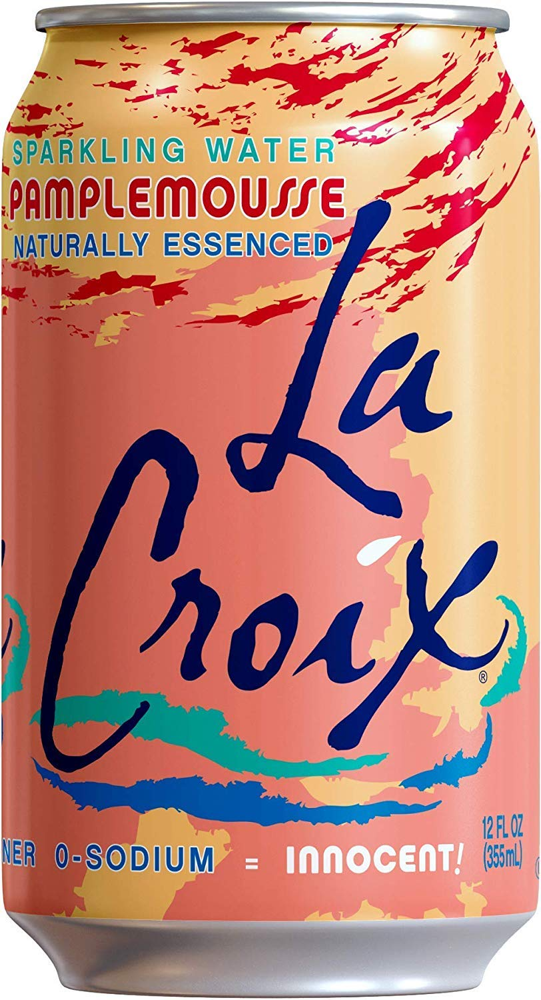

La Croix Sparkling Water

LaCroix or La Croix (/ləˈkrɔɪ/;) is an American brand of carbonated water that originated in La Crosse, Wisconsin by G. Heileman Brewing Company and is now distributed by National Beverage Corporation. Some original flavors include grapefruit, lemon, lime, limoncello, cran-raspberry, orange, coconut, berry, apricot, passionfruit, tangerine, peach-pear, mango and pure. The mixe